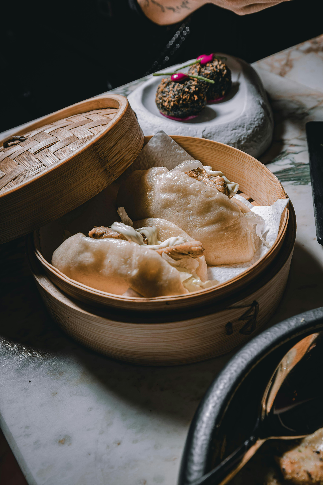

Home
Steamed Bao Buns with Pork Filling

Description
These pillowy-soft bao buns are a staple of Chinese street food. Light and fluffy, they are steamed to perfection
and then filled with savory pork, crisp vegetables, and a drizzle of creamy sauce.
The gentle sweetness of the dough balances beautifully with the richness of the filling.
Perfect as an appetizer, snack, or main dish, bao buns are versatile and can be filled with almost anything—from
pork belly to tofu. This recipe will guide you step by step to recreate the iconic flavor and texture at home.
Ingredients
- 2 cups all-purpose flour
- 2 tsp instant yeast
- 3 tbsp sugar
- 1/2 tsp baking powder
- 3/4 cup warm milk
- 2 tbsp vegetable oil
- 1 lb pork belly or pork shoulder, sliced
- 2 tbsp soy sauce
- 1 tbsp hoisin sauce
- 1 tsp sesame oil
- 1/2 cucumber, thinly sliced
- Pickled cabbage or lettuce
- Mayonnaise (optional)
Steps
- In a bowl, mix flour, yeast, sugar, and baking powder. Gradually add warm milk and oil, kneading until a smooth dough forms. Cover and let rise for 1–2 hours.
- Punch down the dough and divide into small balls. Roll each ball into an oval, fold in half, and place on parchment squares.
- Set in a bamboo steamer, cover, and let rest for 30 minutes.
- Steam the buns over boiling water for 10 minutes until fluffy. Remove and keep warm.
- Meanwhile, cook the pork with soy sauce, hoisin, and sesame oil until tender and caramelized.
- Fill each bao with pork slices, cucumber, and pickled cabbage. Add a drizzle of mayonnaise if desired.
- Serve hot, straight from the steamer.